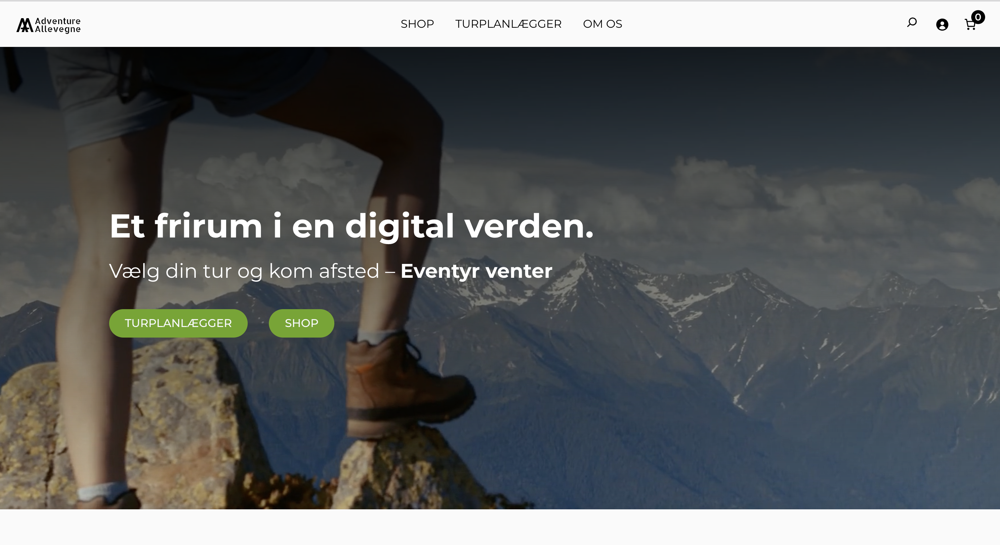
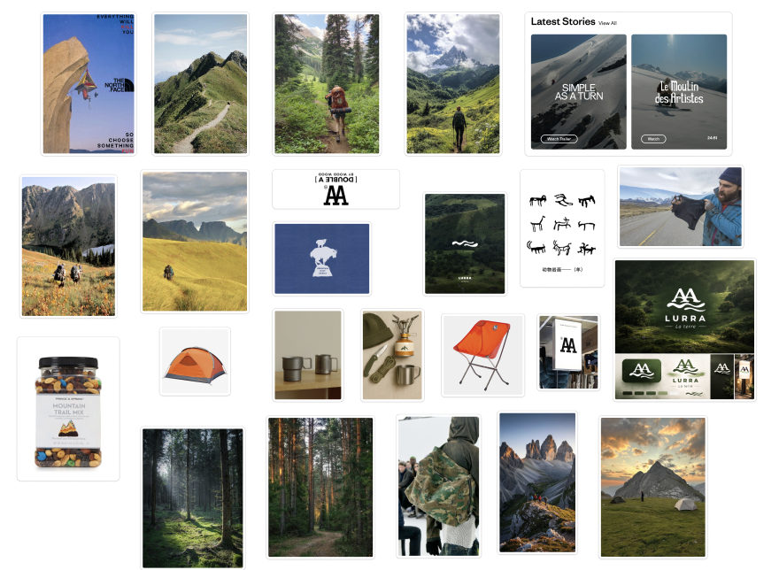
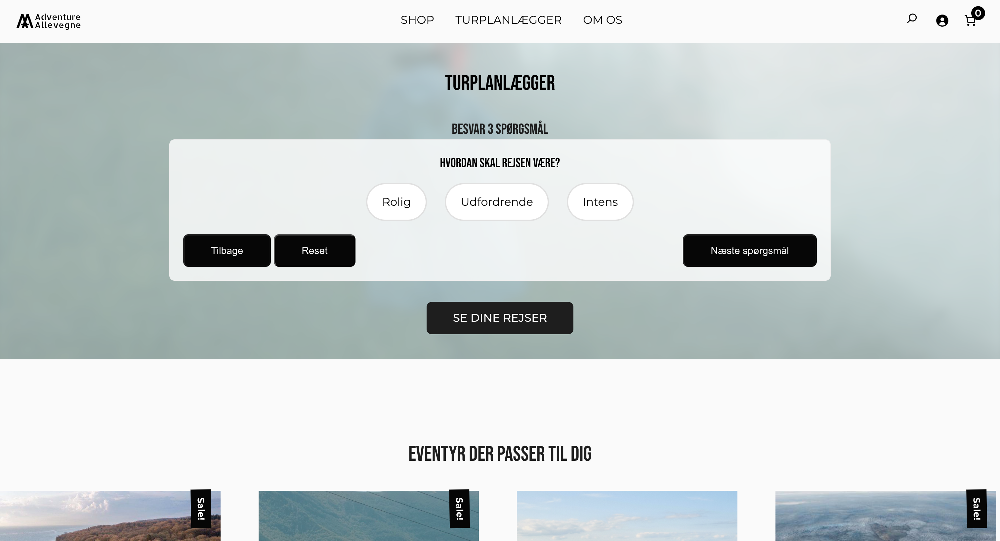

Branding · UI/UX · SEO
Adventure Allevegne
Et digitalt koncept, der gør det lettere at finde inspiration og tage på eventyr tættere på, end man tror.

01 · Konceptet
Eventyr behøver ikke være langt væk.
Adventure Allevegne samler inspiration til oplevelser i et enkelt og inviterende digitalt univers.
Mit fokus var at skabe en identitet og brugeroplevelse, der føles nysgerrig, aktiv og nem at gå på opdagelse i.
Jeg arbejdede også med søgemaskineoptimering gennem Yoast SEO for at gøre hjemmesiden mere synlig i Googles søgeresultater.
02 · Brugerrejsen
Fra inspiration til afsted.
-
01
Opdag
Find nye steder og aktiviteter.
-
02
Vælg
Få et hurtigt overblik over oplevelsen.
-
03
Tag afsted
Gå fra idé til konkret eventyr.
03 · Designet
Naturens former i et digitalt system.



04 · Refleksion
Det tog jeg med videre.
Projektet gav mig erfaring med at skabe en tydelig sammenhæng mellem koncept, visuel identitet, brugeroplevelse og synlighed på Google.
Næste skridt